Famicom AV-Mod
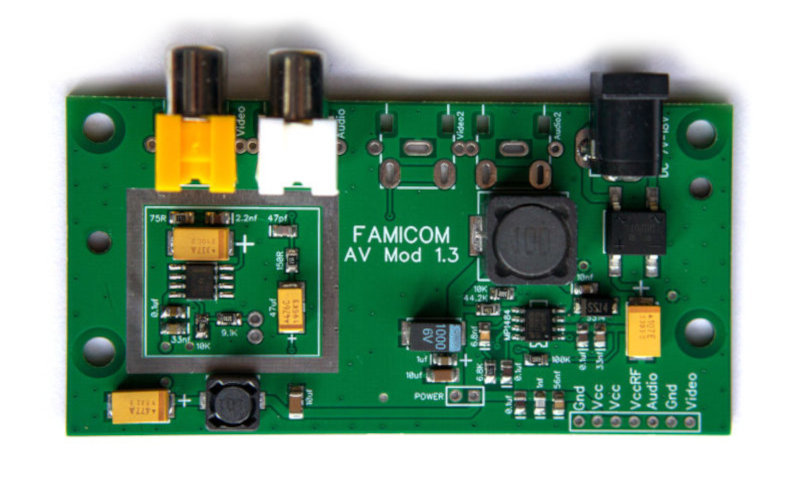
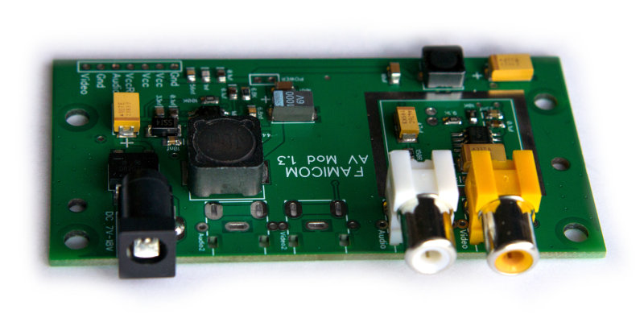
Плата AV-Mod служить заміною оригінальної плати живлення та виводу Аудіо/Відео для Famicom.
Також можна встановити на клони Dendy, плата яких складається з двох частин.
Діодний міст дозволяє підключати блок живлення будь-якої полярності. А імпульсний перетворювач напруги MP1484 дозволяє підключати блок живлення від 7V до 18V.
Встановлення на Famicom першої ревізії.
1. Розбираємо Famicom, відокремлюємо плату від корпусу.
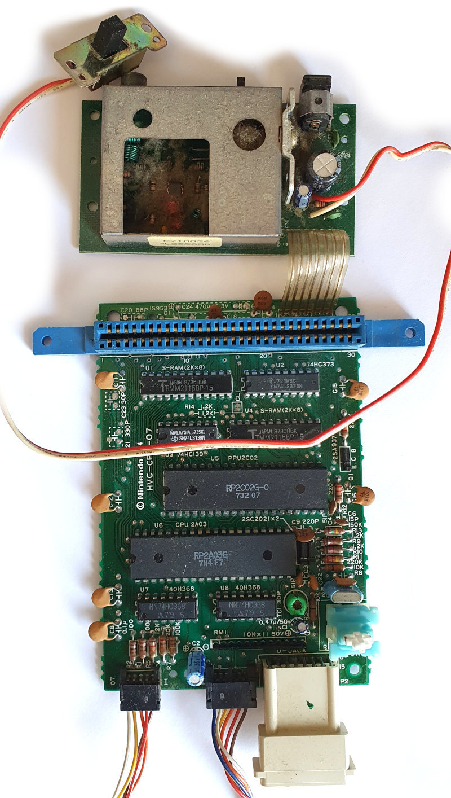
2. Відпаюємо шлейф та вимикач.

3. Припаюємо плату AvMod.

4. Припаюємо вимикач у отвори "POWER", полярність значення не має.
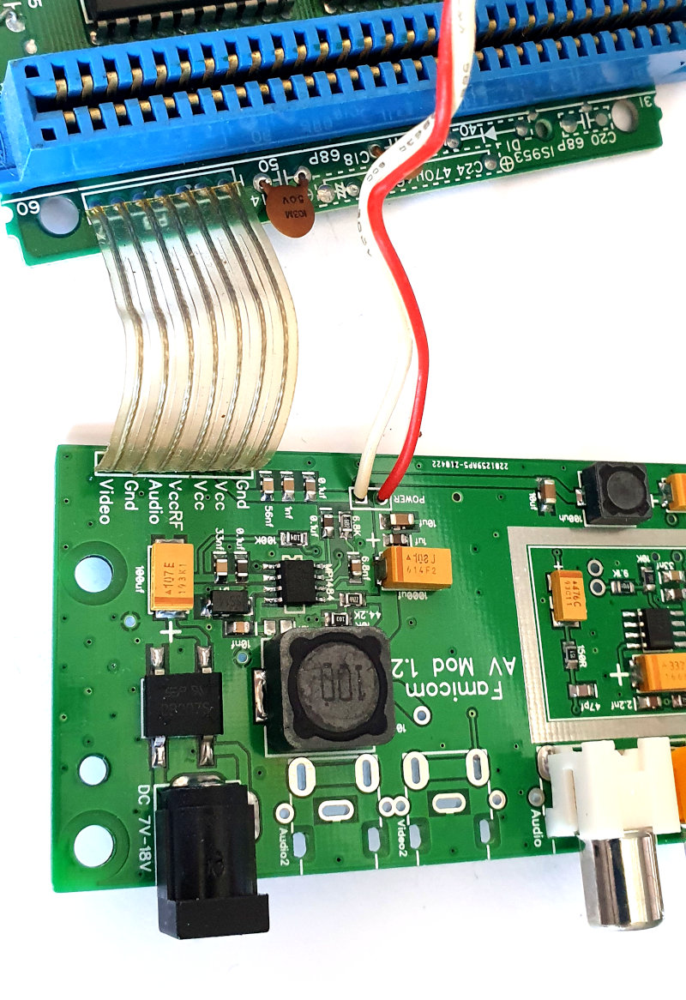
5. Відмиваємо флюс. Якщо ви не плануєте піднімати ногу PPU, то потрібно запаяти перемичку "VIDEO".

Якщо перемичка замкнута - можна сміливо підключати живлення, композитний кабель і перевіряти працездатність. Після цього переходити до етапу модифікації корпусу.
Якщо ж Ви "балувані" і бажаєте отримати максимально чисте зображення без вертикальних смуг, необхідно підняти ногу PPU і підключити екранованим дротом безпосередньо до AvMod.
Інструкція буде нижче.
Встановлення на Famicom другої ревізії.
1. Розбираємо Famicom, відокремлюємо плату від корпусу.
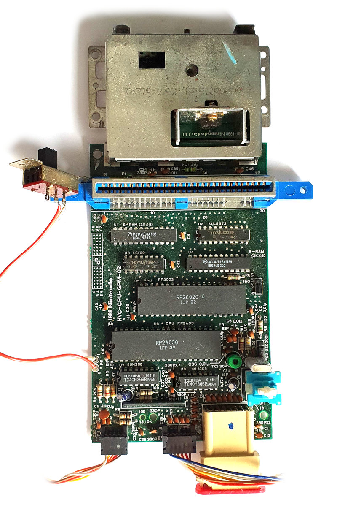
2. А ось тепер треба більше терпіння, і розігріти паяльник сильніше, а краще відразу два, і якщо є фен - то і його варто використовувати.
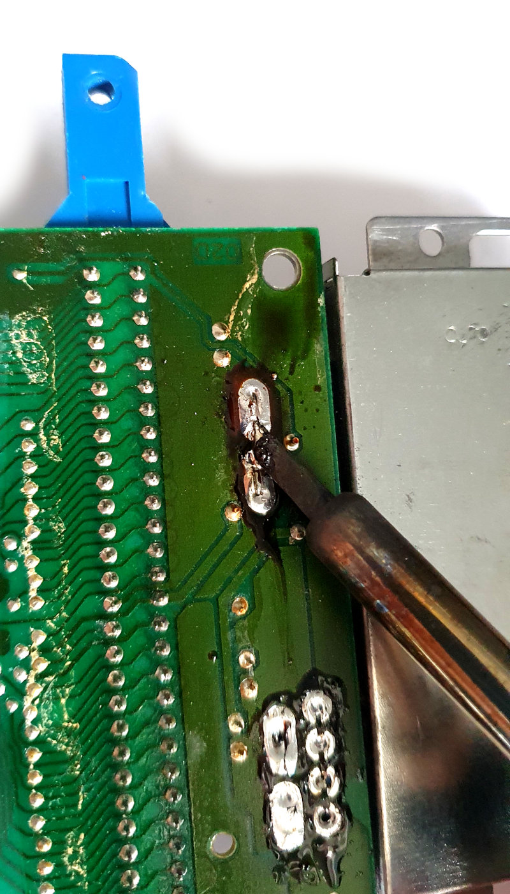
3. Не здавайтесь, це реально зробити.
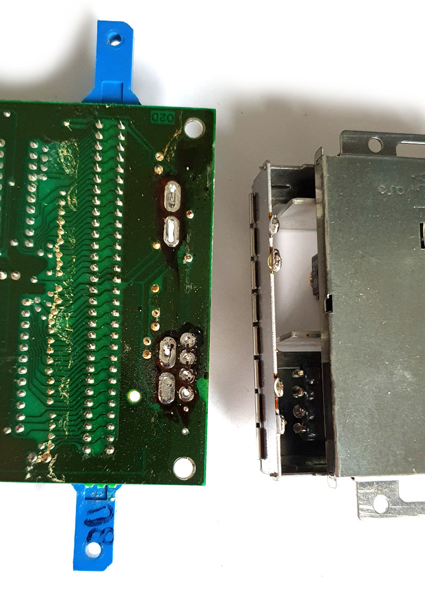
4. Пробиваємо отвори зубочисткою.

5. Відмиваємо піт, сльози, лайки разом із залишками обгорілого флюсу на платі.

6. Знаходимо на столі (або під столом) дроти, і припаюємо їх у відповідності із зображенням нижче.
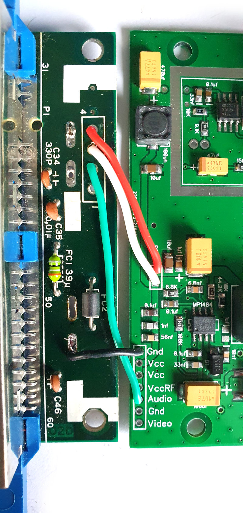
7. Якщо ви не плануєте піднімати ногу PPU, потрібно запаяти перемичку "VIDEO".
Підняття ноги PPU.
1. Знаходимо PPU на платі (RP2C02). Чіпляємо пінцетом праву верхню ногу (нога під номером 21).
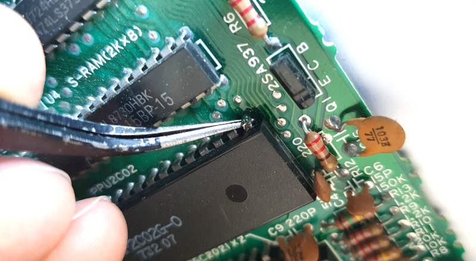
2. Гріємо паяльником ногу, і повільно піднімаємо ногу вбік та вгору від PPU.

3. Піднімати ногу не варто надто високо, щоб не відламати. Достатньо розірвати контакт із платою.
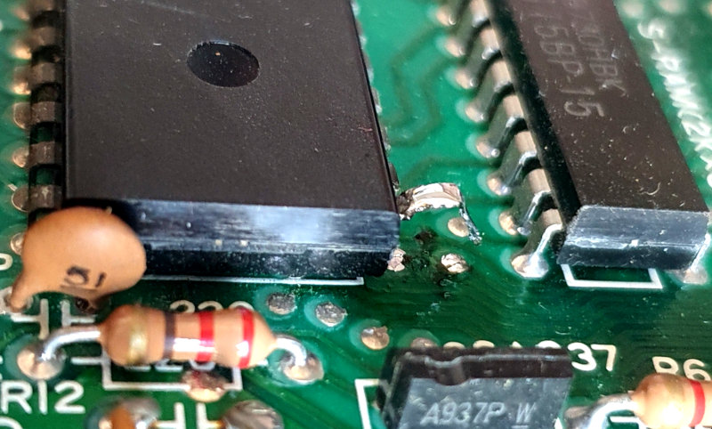
4. Знаходимо або купуємо екранований дріт невеликого перерізу (діаметр близько 2мм). Можна використовувати кабель USB з екраном, але вони зустрічаються не дуже часто.

5. Центральну жилу запаюємо до ноги PPU, а землю (екран) до ноги сусіднього чіпа SRAM. Тут важливо не розплавити ізоляцію дроту, при цьому заздалегідь необхідно залудити дріт і контакти, а також надати дроту необхідну форму.

6. Другий кінець екранованого дроту запаюємо на плату AvMod. Перевірте, чи перемичка "VIDEO" не замкнута, інакше доріжка може створювати додаткові перешкоди.
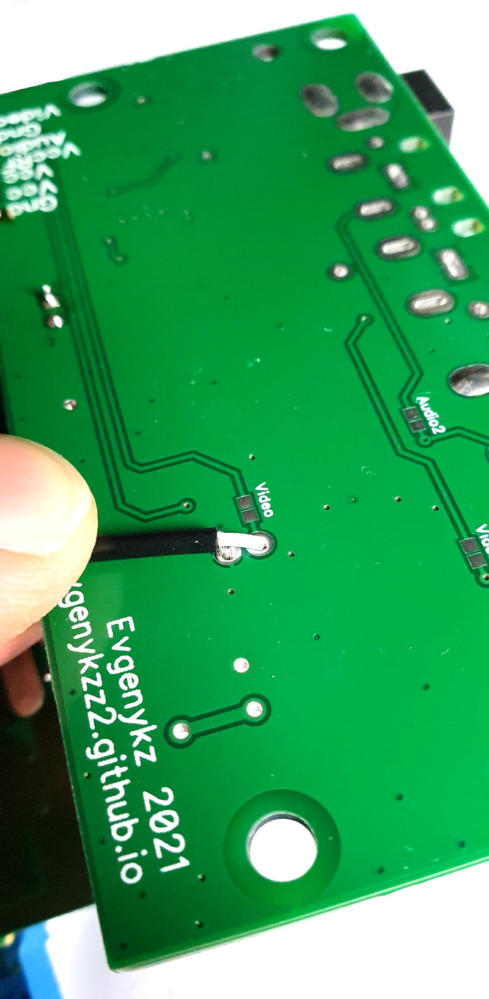

Модифікація корпусу.
1. Готуємо порожній корпус.
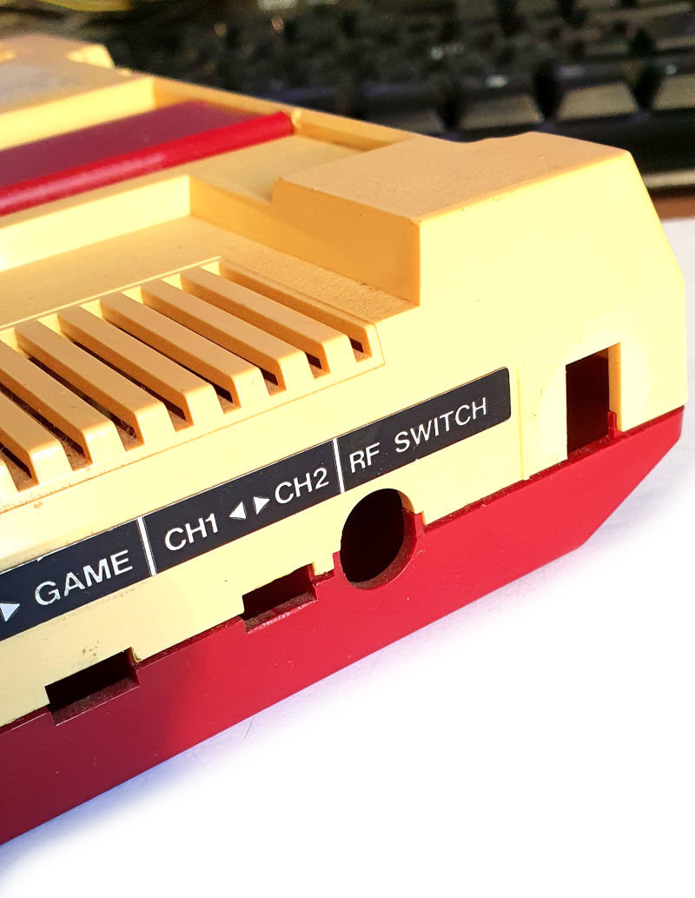
2. Використовуємо малярну клейку стрічку. Обводимо краї отвору RF.

3. Переносимо малярну стрічку лівіше, щоб центр обведеного отвору збігався з центом між < > на наліпці Famicom. Додатково можна використовувати AvMod для точного визначення положення другого отвору.
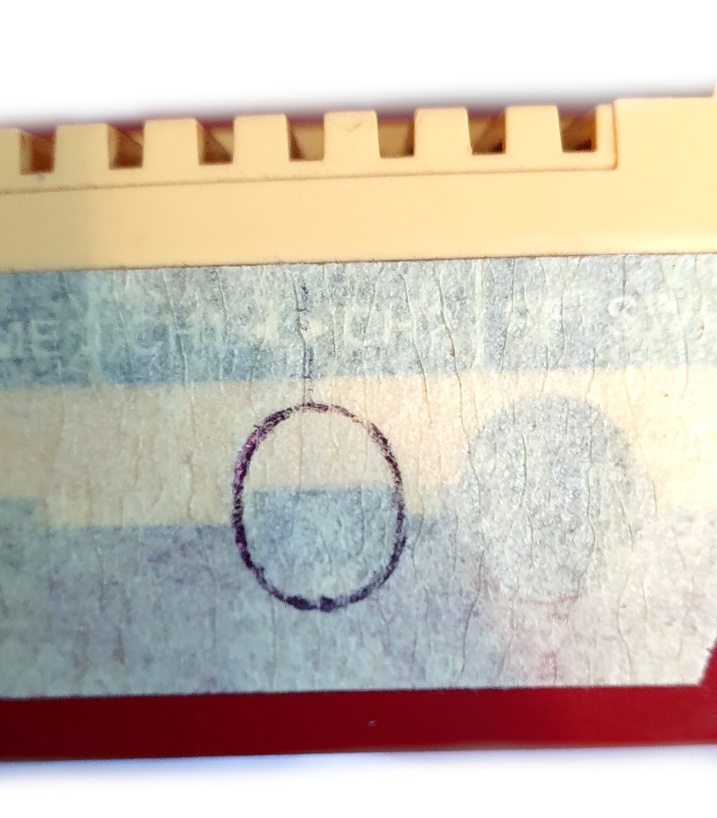
4. Висвердлюємо фрезером або бормашиною отвір за контуром.

5. Забираємо клейку стрічку, вирівнюємо краї отвору під AvMod.
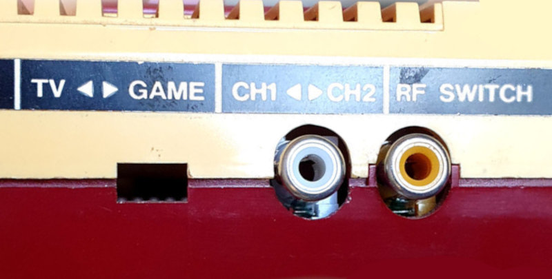
Зв'язатися зі мною можна по Viber, Telegram, Телефон +380992028599 Кузнєцов Євген
Відправлення: Нова Пошта/Укрпошта.